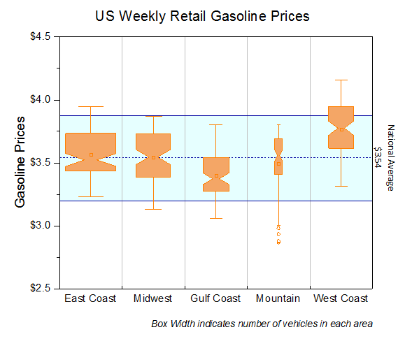

Gekerbte Boxen mit variablen-gesteuerter Breite
notched-boxes
Zusammenfassung
Origins Boxdiagramm ist vielseitig anpassbar. Dieses Tutorial zeigt, wie Sie ein gekerbtes Boxdiagramm erstellen und die Boxbreite über einen anderen Datensatz bestimmen.
- 
Origin-Version mind. erforderlich: 2015 SR0
Was Sie lernen werden
- Einstellungen eines Boxdiagramms benutzerdefiniert anpassen,
- Einen Datensatz verwenden, um die Boxbreite zu steuern
- Dialog Achsen für Boxdiagramme benutzerdefiniert anpassen
- Ein Füllflächendiagramm als Hintergrund hinzufügen
Boxbreite mit Variablen steuern
Dieses Tutorial basiert auf dem Projekt: <Origin-Verzeichnis>\Samples\Tutorial Data.opj.
Sie finden dieses Diagramm auch über den Origin-Navigator. (Wählen Sie Hilfe: Origin-Navigator oder drücken Sie die Taste F11 und wechseln Sie dann zur Registerkarte Diagrammbeispiel. Wählen Sie in der Auswahlliste Boxdiagramme.)
- Öffnen Sie das Projekt Tutorial Data.opj und navigieren Sie zu dem Ordner Box Variable Width.
- Aktivieren Sie die Arbeitsmappe Book7, markieren Sie die Spalten A~F und wählen Sie dann Zeichnen: Statistisch: Boxdiagramm. Markieren und löschen Sie als Nächstes das Legendenobjekt aus dem Diagramm.
- Klicken Sie doppelt auf eine der Boxen, um den Dialog Details Zeichnung zu öffnen und zu der Registerkarte Box zu gehen. Legen Sie den Stil auf Gekerbte Box fest. Aktivieren Sie das Kontrollkästchen Boxbreite nach Parameter und setzen Sie dann die Boxbreite (%) auf Number of Vehicles (in million). Geben Sie 1,2 als Skalierungsfaktor ein. Aktivieren Sie das Kontrollkästchen Ausreißer. Ausreißer auf einer Linie ist automatisch aktiviert.
- Klicken Sie auf OK, um den Dialog zu schließen. Wechseln Sie zur Objektverwaltung, die sich rechts im Origin-Arbeitsbereich befindet, und deaktivieren Sie das letzte Diagramm. Klicken Sie auf die Schaltfläche Neu skalieren
 , um das Diagramm neu zu skalieren.
, um das Diagramm neu zu skalieren.
- Das Diagramm sieht dann folgendermaßen aus:

Weitere Schritte der benutzerdefinierten Anpassung des Boxstils
Die folgenden Schritte passen das Boxdiagramm weiter benutzerdefiniert an.
- Um die gleiche Farbe für jede Box verwenden, klicken Sie doppelt auf eine der Boxen, um den Dialog Details Zeichnung zu öffnen. Wechseln Sie zur Registerkarte Muster. Setzen Sie die Randfarbe auf Orange. Setzen Sie die Breite auf 1,5.
- Um die Boxen mit Farbe zu füllen, erweitern Sie die Auswahlliste Füllfarbe und wählen Sie dann auf der Registerkarte Einzeln ein helles Orange, wie unten zu sehen:
- Beachten Sie, dass durch Hinzufügen des Kontrollkästchens Ausreißer auf der Registerkarte Box eine Registerkarte Symbol hinzugefügt wurde. Verwenden Sie die Bedienelemente auf dieser Registerkarte, um das Ausreißersymbol, wie unten gezeigt, benutzerdefiniert anzupassen:
- Um die Symbole 99% und 1% auszublenden, gehen Sie zur Registerkarte Perzentile und deaktivieren Sie das Kontrollkästchen sowohl für 99% als auch für 1%. Wählen Sie das zweite Symbol in der ersten Zeile für Mittelwert:
- Klicken Sie auf OK, um alle Änderungen zu übernehmen.
Weitere Schritte der benutzerdefinierten Anpassung von Achsen
- Um durchgezogene Gitternetzlinien zwischen den Boxen zu zeigen, klicken Sie doppelt auf die X-Achse, um den Dialog Achsen zu öffnen. Gehen Sie bei ausgewähltem Symbol Horizontal zur Registerkarte Skalierung und setzen Sie die Anzahl der Kleinen Hilfsstriche auf 1:
- Wechseln Sie zur Registerkarte Gitternetze und wählen Sie das Symbol Vertikal aus. Aktivieren Sie das Kontrollkästchen Zeigen im Zweig Nebengitternetzlinien und setzen Sie den Stil auf Durchgezogen.
- Gehen Sie zur Registerkarte Linie und Hilfsstriche und setzen Sie den Stil der Hilfsstriche für die X-Achse (Unten) folgendermaßen:
- Halten Sie die Strg-Taste gedrückt und wählen Sie die Symbole Oben und Rechts. Aktivieren Sie das Kontrollkästchen Linie und Hilfsstriche zeigen, um die Linie und die Hilfsstriche der oberen X- und rechten Y-Achse anzuzeigen. Setzen Sie den Stil der Hilfsstriche auf Kein:
- Gehen Sie zur Registerkarte Skalierung und wählen Sie das Symbol Vertikal. Nehmen Sie folgende Einstellungen vor:
- Gehen Sie zur Registerkarte Beschriftung der Hilfsstriche, stellen Sie sicher, dass das Symbol Links ausgewählt ist und geben Sie das Präfix $ ein.
- Gehen Sie zur Registerkarte Titel, stellen Sie sicher, dass das Symbol Links ausgewählt ist, und ändern Sie den Text des Titels der Y-Achse in Gasoline Prices.
- Klicken Sie auf OK, um den Dialog Achsen zu schließen.
- Um einen Titel und eine Fußnote zu dem Diagramm hinzuzufügen, klicken Sie mit der rechten Maustaste in den weißen Bereich des Diagramms und wählen Sie im Kontextmenü Layertitel hinzufügen/modifizieren. Geben Sie US Weekly Retail Gasoline Prices ein. Markieren Sie den Titel und verwenden Sie die Symbolleiste Format, um die Schriftgröße auf 26 zu setzen. Klicken Sie mit der rechten Maustaste unter die Hilfsstrichsbeschriftungen der X-Achse und wählen Sie Text hinzufügen im Kontextmenü. Klicken Sie im direkten Bearbeitungsmodus auf die Schaltfläche I auf der Symbolleiste Format und geben Sie dann Box width indicates number of vehicles in each area als Fußnote ein. Sie wird kursiv angezeigt.
Linie für den nationalen Durchschnitt und Min&Max-Bereich hinzufügen
Jetzt werden drei Referenzlinien zur Y-Achse hinzugefügt, um den nationalen und den Bereich Minimum-Maximum des nationalen Benzinpreises zu zeigen.
- Klicken Sie doppelt auf die Y-Achse, um den Dialog Achsen erneut zu öffnen. Gehen Sie zur Registerkarte Referenzlinien und klicken Sie auf die Schaltfläche Details..., um den Dialog Referenzlinien zu öffnen.
- Klicken Sie auf die Schaltfläche Hinzufügen unten im Dialog Referenzlinien, um eine Referenzlinie hinzuzufügen. Wählen Sie diese neue Linie aus, setzen Sie den Wertetyp auf Statistik und geben Sie Mean(plotdata(6, Y)) im Feld Bei Achsenwert ein (Sie können auf den Pfeil am Ende dieses Felds klicken, um ein Standardmuster auszuwählen). Ändern Sie den Linienstil in Königsblau und Strich und aktivieren Sie das Kontrollkästchen Zeigen im Zweig Beschriftung.
- Klicken Sie erneut auf die Schaltfläche Hinzufügen, um die zweite Referenzlinie hinzuzufügen. Wenn diese Linie im Feld Referenzlinien bei ausgewählt ist, setzen Sie den Wertetyp auf Statistik und geben Sie min(plotdata(6, Y)) im Feld Bei Achsenwert ein. Setzen Sie den Linienstil auf Königsblau und Kompakt.
- Klicken Sie erneut auf die Schaltfläche Hinzufügen, um die dritte Referenzlinie hinzuzufügen. Wenn diese Linie im Feld Referenzlinien bei ausgewählt ist, setzen Sie den Wertetyp auf Statistik und geben Sie max(plotdata(6, Y)) im Feld Bei Achsenwert ein. Setzen Sie den Linienstil auf Königsblau und Kompakt.
- Klicken Sie auf OK, um den Dialog zu schließen und die Referenzlinien zur Tabelle der Linien hinzuzufügen.
- Geben Sie Nationaler Durchschnitt in der Zelle Beschriftungstext der ersten hinzugefügten Linie ein. Wählen Sie die Linie Füllen in für die zweite und dritte Referenzlinie, wie unten zu sehen, aus:
- Klicken Sie auf die Schaltfläche Anwenden, um die Referenzlinien zum Diagramm hinzuzufügen. Klicken Sie erneut auf die Schaltfläche Details..., um den Dialog Referenzlinien zu öffnen. Wählen Sie die zweite Linie im rechten Bedienfeld und setzen Sie die Füllfarbe im Zweig Muster auf Zyan und die Transparenz auf 90. Klicken Sie auf OK.
- Klicken Sie auf OK, um den Dialog zu schließen. Gehen Sie zurück zum Diagramm und klicken Sie mit der rechten Maustaste auf die Beschriftung der Mittelwertlinie, um Eigenschaften im Kontextmenü auszuwählen. Der Dialog Textobjekt wird geöffnet. Geben Sie den Text unten ein und nehmen Sie die Formateinstellungen vor:
National Average $$(v, *3)
- Klicken Sie auf OK. Am Ende erhalten Sie das endgültige Diagramm.